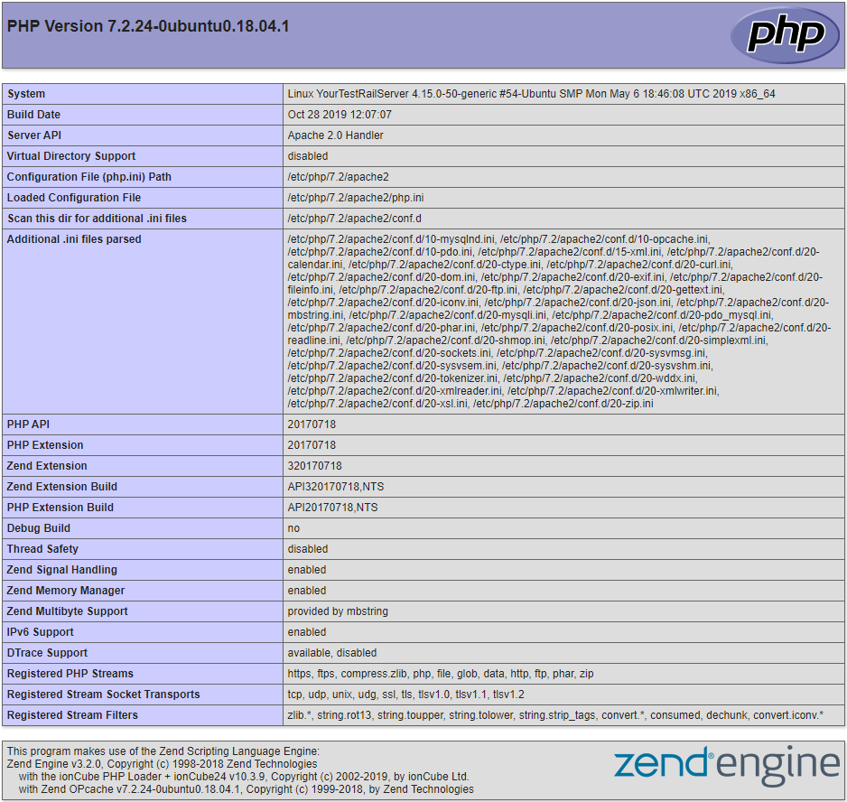

Setting up Xdebug with Lagoon#
Note:
Note: some uselagoon base images are still using Xdebug v2, and will be upgraded soon. You can keep track on this issue.
Xdebug v3 changed the default remote_port/client_port from 9000 to 9003. If you're using the uselagoon v2 images and generate a fresh debug config in VSCode, it will be Xdebug v3 and your defaults won't match.
Enable Xdebug Extension#
The uselagoon provided Base images are pre-configured to include Xdebug. For performance reasons, the extension is not installed by default. To install Xdebug, set the environment variable XDEBUG_ENABLE to any string.
- Locally (pygmy and Lando)
- If you’re using the amazee.io example
docker-compose.ymlfile, this setting already exists. Uncomment these lines: https://github.com/amazeeio/drupal-example-simple/blob/9.x/docker-compose.yml#L16-L17. - Make sure to rebuild and restart the container after changing this setting.
- Remotely (dev/prod)
- You can use the Lagoon API to add the environment variable to a running environment. Make sure to redeploy the environment after changing this setting.
Activate xDebug Extension#
Even if Xdebug is installed, it may not be enabled. Base images provided by Lagoon are pre-configured to require an activation trigger for the Xdebug extension to start a session. You can view the complete documentation for starting the debugger but the most straightforward instructions are below.
CLI#
The php-cli image is configured to always activate Xdebug when it’s installed, so there is nothing else that needs to be done. Running any PHP script will start a debugging session.
Web#
Install a browser extension to set/unset an activation cookie.
Make sure the activation cookie is set for the website you want to start debugging.
Configure PHPStorm#
- PHPStorm is configured correctly out of the box.
- Click the “Start Listening for PHP Debug Connections” icon in the toolbar.
- Load a webpage or run a Drush command.
- On first run, PHPStorm should pop up a window asking you to:
- Confirm path mappings.
- Select the correct file locally that was triggered on the server.
Configure Visual Studio Code#
- Install the PHP Debug extension by Felix Becker.
- Follow the instructions to create a basic
launch.jsonfor PHP. - Add correct path mappings. For a typical Drupal site, an example would be:
"pathMappings": {
"/app": "${workspaceFolder}",
},
- In the Run tab of Visual Studio Code, click the green arrow next to “Listen for Xdebug”
- Load a webpage or run a Drush command.
Troubleshooting#
- Verify that Xdebug extension is installed. The best way to do this on a Drupal site is to check the PHP status page. You should find a section about Xdebug and all its settings.

- Verify the following settings:
xdebug.remote_enabled |
On |
xdebug.remote_host |
host.docker.internal or your IP address |
xdebug.remote_port |
9000 |
- Verify you have the activation cookie set. You can use the browser tools in Chrome or Firefox to check that a
XDEBUG_SESSIONcookie is set. - Verify that Xdebug is activated and attempting to start a debug session with your computer. You can use the
nc -l 9000command line tool to open the Xdebug port. If everything is configured in PHP correctly, you should get a Xdebug init response when you load a webpage or run a Drush command. - Verify that the
xdebug.remote_hosthas been set correctly. For local debugging with docker for mac, this value should behost.docker.internal. For remote debugging this value should be your IP address. If this value was not correctly determined, you can override it by setting theDOCKERHOSTenvironment variable. - Verify that Docker for Mac networking is not broken. On your host machine, run
nc -l 9000, then in a new terminal window, run:
docker-compose run cli nc -zv host.docker.internal 9000
- You should see a message like:
host.docker.internal (192.168.65.2:9000) open. - When using Lando locally, in order to debug scripts run from the CLI you must first SSH into the cli container via
lando ssh. You won’t be able to debug things by runninglando drushorlando php. - You can enable the Xdebug log by setting the
XDEBUG_LOGenvironment variable. Logs will be saved to/tmp/xdebug.log.